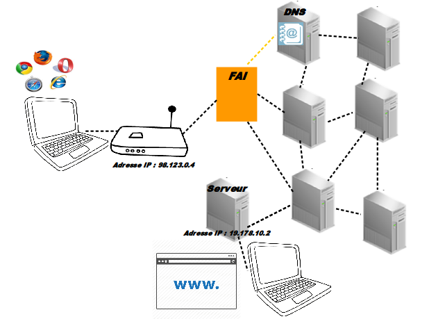
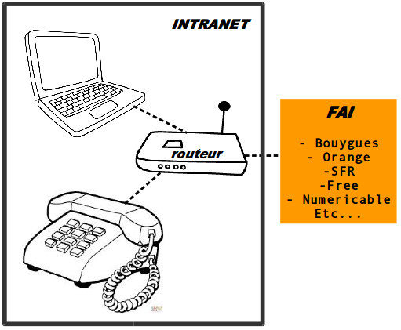
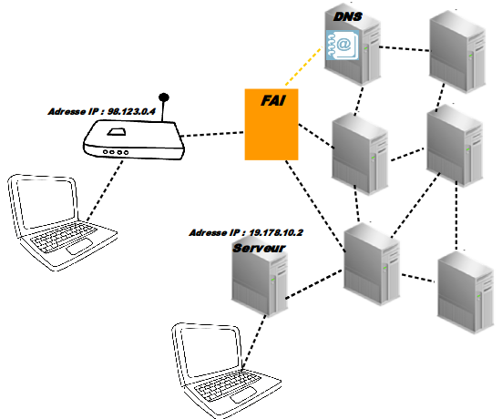

Introduction
à la fouille et l'analyse
des données du WEB
MASTER NUMI (2015)Elise Tancoigne et Constance de Quatrebarbes
Internet et le Web
Comment marche Internet?
Comment marche un site web?
Les différentes versions du web
TP: fouille d'une page web statique
Comment marche Internet?
⇩
De mon ordinateur à la page web
Avec un schema au tableau c'est mieux ...
⌂ Intranet - A la maison ⌂
Pour Internet, on a besoin de:
- Un ordinateur
- Un FAI :
(Fournisseur d'Accès Internet)- soit l'abonnemement auprès d'un opérateur téléphonique (offre analogique, GSM ou optique)
- et le routeur: la fameuse "box" Internet appelée aussi modem

le FAI qui nous donne accès à Internet
☁ Internet = InterconnectedNetwork ☁
- Un réseau mondial d'ordinateurs qui ont tous une adresse IP unique
- qui émettent et reçoivent des données sous forme de packets
- en suivant un même mode de communication la "famille" TCP/IP

☎ Les Protocoles ☎
Dans la famille "TCP/IP", il existe des dizaines de protocoles de communication différents
- HTTP, HTTPS
- SMTP, POP3
- FTP, P2P
- SSH, TelNet
- UDP, IRC
- WIFI
- Bluetooth
- RFID
- GSM
- Cable optique
- Cable analogique
- Ethernet
- Token
- Etc etc etc...
HyperText Transfer Protocol
Soit un protocole de transfert de données hypertextuelles:
des documents reliés entre eux par des hyperliens acessible via une URL
Ce TD se concentre uniquement sur les données du web
Internet ≠ World Wide Web
Internet est un réseau physique constitué
- de serveurs avec une adresse IP
- reliés entre eux par des câbles
- qui echangent des packets de données
Le World Wild Web est un réseau de documents reliés entre eux par des hyperliens
- qui utilise le réseau Internet
- pour échanger des pages webs
⇩
La requête HTTP
-
Depuis mon navigateur:
Charger une url = requete HTTP
- PING
- Whois
- Requete HTTP
- Resolution d'adresse IP
- Traceroute jusqu'au serveur
- qui renvoie un document HTML